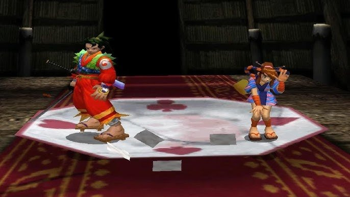
La console più venduta della sua generazione aveva la peggiore architettura di memoria, quella tecnicamente più valida fu la meno venduta di tutte, e quella su cui era più facile sviluppare apparteneva a un'azienda che non aveva mai prodotto console prima. Probabilmente avrai riconosciuto qui la PS2, il GameCube e l'Xbox.
C'è una battuta secondo cui quando uno sviluppatore portava un gioco da PS2 a Xbox, la prima cosa che faceva era buttare via il sistema di gestione della memoria e scriverne uno nuovo da zero, perché 32 MB più 4 MB più 2 MB non entrano in 64 MB.
Per leggere questo articolo non ti servirà conoscere l'assembly né aver lavorato con SDK specifici. Basta capire cos'è un puntatore, in cosa lo stack differisce dall'heap, che renderizzare la geometria in parallelo al suo aggiornamento è una cattiva idea, e che i classici pattern di accesso di GPU e CPU caricano la memoria in modo diverso.
Ovunque nel testo ci sia dello pseudocodice, serve a illustrare un concetto, non è codice pronto da compilare. Ho mezzo dimenticato le costanti esatte e i nomi dei buffer di ciascuna piattaforma, ma il pattern di funzionamento era sempre più o meno lo stesso.
Perché l'architettura della memoria conta davvero
Un processore fa esattamente una cosa: prende dei dati dalla memoria, li modifica in qualche modo e rimette il risultato in memoria. Tutto ciò che fa è in un modo o nell'altro legato alla lettura e alla scrittura in memoria, ma non tutta la memoria è uguale, e i diversi tipi fisici di memoria funzionano a velocità radicalmente diverse, con larghezze di bus diverse e diversi vincoli di indirizzamento.
Così, quando un processore è costretto ad aspettare una risposta dalla memoria lenta, non fa nulla di utile. Questi cicli vuoti si chiamano stall; mangiano direttamente prestazioni, e gli sviluppatori fanno di tutto per eliminarli, ma il campo di battaglia continua a spostarsi in un senso o nell'altro. Su un PC con cache a più livelli, la maggior parte degli stall viene nascosta dall'hardware — "nascosta" qui va letto in entrambi i sensi: sia come "media il tempo di accesso ai dati" sia come "buona fortuna a capire perché è comparso uno stall". Sulle console gli stall sono stati storicamente combattuti riducendo gli strati tra l'hardware e l'SDK e con vari insiemi di cache o meccanismi simili.
Sulle prime console non c'erano quasi cache, e lo sviluppatore doveva pensare da solo a dove il processore legge i dati in ogni particolare momento. E tutte le decisioni nell'architettura della memoria delle console attraverso le epoche non sono altro che risposte diverse a una sola e medesima domanda: come fornire al processore i dati abbastanza in fretta con un budget limitato. Le risposte cambiavano di generazione in generazione, il che spesso spiega perché il codice scritto per una console venga portato su un'altra con problemi o richieda una riscrittura sostanziale.
L'Atari 2600 e le meraviglie a 8 bit degli anni '80
L'Atari 2600 uscì nel 1977 con un processore MOS 6507 a 1,19 MHz e 128 byte di RAM. 128 byte di memoria disponibile erano pochi anche allora, ma Atari decise che 128 byte sarebbero bastati per tutti. La ROM della cartuccia conteneva fino a 4 kilobyte, anche se in seguito comparvero schemi di bank-switching che estendevano lo spazio di indirizzamento. Non c'era un processore video dedicato nel senso moderno; l'immagine veniva generata dal chip TIA (Television Interface Adapter), e lo sviluppatore doveva sincronizzare il proprio codice con il fascio di elettroni, calcolando letteralmente su un foglio di carta dove il fascio si sarebbe trovato fisicamente in un dato momento del frame.
Il TIA non aveva né un buffer video né un frame buffer; il segnale veniva generato al volo, e se i dati giusti non venivano scritti nei registri giusti al momento giusto, sullo schermo comparivano glitch (artefatti visivi).
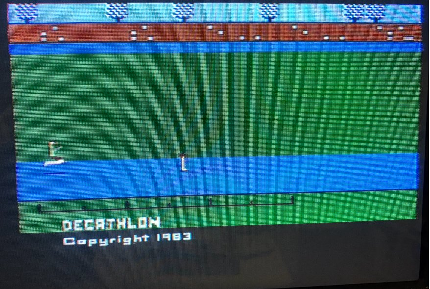
Un piede qui, l'altro là
Il game loop dell'Atari 2600 aveva più o meno questo aspetto:
VERTICAL SYNC (3 lines)
write WSYNC // aspetta la linea
write VSYNC = 1 // inizio del frame
write WSYNC
write VSYNC = 0
VERTICAL BLANK (37 lines)
// tutta la logica di gioco: movimento, collisioni, IA
// ci sono 2280 cicli CPU per la logica
VISIBLE LINES (192 lines)
for each line:
write WSYNC // sincronizza con il fascio
write background color // fallo prima che inizi la linea
update sprite position // rigorosamente sui cicli giusti
write sprite data
HORIZONTAL BLANK
// un po' più di tempo per logica extraIl vertical blank (VBlank) è il tempo durante il quale il fascio di elettroni torna dall'angolo in basso a destra dello schermo a quello in alto a sinistra per iniziare un nuovo frame, e in una TV analogica il fascio viene oscurato in questo momento per non lasciare una linea diagonale visibile sullo schermo. Sull'Atari 2600 questo periodo dura 37 linee, ed è l'unico momento in cui il programma può eseguire la logica di gioco senza preoccuparsi di ciò che accade a schermo, perché tanto il fascio non sta disegnando nulla di visibile.
L'horizontal blank (HBlank) è la stessa cosa ma alla fine di ogni linea: il fascio raggiunge il bordo destro, viene oscurato e torna al bordo sinistro per iniziare la linea successiva, e in quel breve intervallo il processore ha qualche ciclo per calcoli extra tra il disegno di una linea e l'altra.
Sviluppare per l'Atari 2600 era essenzialmente programmare per un sistema in tempo reale, solo senza sistema operativo, il che ti costringeva a contare i cicli a mano. Se la logica nel vertical blank prendeva 10 cicli più del consentito, la linea successiva veniva disegnata in modo errato.
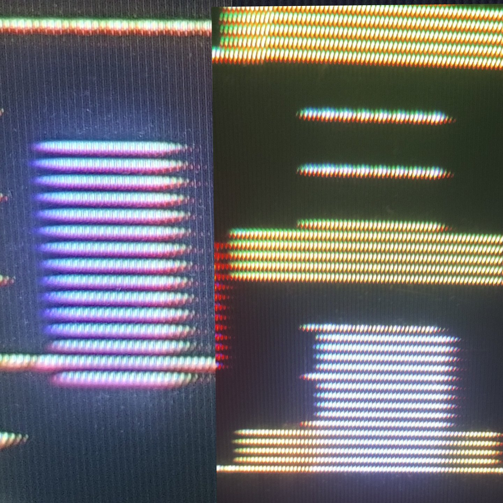
Non è riuscito a riempire in tempo il buffer di linea
Ricordi i 128 byte? Beh, erano divisi tra lo stack e le variabili di gioco. Lo stack di solito prendeva 20–32 byte, e non restava poi molto per tutto il resto — come le posizioni degli oggetti, il punteggio, i flag di stato e i dati dei livelli.
La ROM della cartuccia era codice eseguibile che il processore leggeva direttamente ed eseguiva subito. Non c'era caricamento in RAM, perché semplicemente non c'era da nessuna parte dove caricarlo, e questo significava anche che qualsiasi automodifica del codice era fisicamente impossibile, perché il codice era inciso nel chip. Esisteva anche una cosa come l'hacking delle lookup table nella ROM, ma era più uno strumento di ottimizzazione e il territorio dei geek dell'epoca.
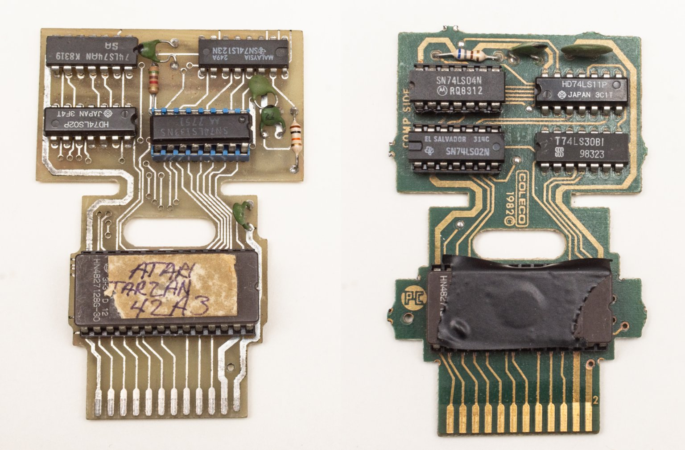
Poiché ogni ciclo CPU contava, un modo per spremere più prestazioni dall'hardware era memorizzare nella ROM tabelle di valori precalcolati invece di calcolarli in tempo reale, perché leggere un byte da una tabella è un'istruzione, mentre un seno o una moltiplicazione sono diversi cicli che potrebbero non entrare nel blank. Così le tabelle tipiche contenevano posizioni degli sprite, valori del seno per l'animazione di oscillazione, maschere di collisione precalcolate, colori per i gradienti di cielo o acqua, dati per la generazione del suono. Tutto questo doveva entrare in 4 kilobyte di ROM, quindi risparmiare sulle tabelle significava contemporaneamente una guerra per ogni byte con i dati stessi del gioco.
Era considerato particolarmente elegante costruire le tabelle in modo che si sovrapponessero le une alle altre, dove la stessa regione di ROM viene letta con un offset e produce dati diversi a seconda dell'indirizzo di partenza, il che permetteva di memorizzare diverse tabelle logiche nello spazio di una sola fisica.
NES, Mega Drive, SNES (1985–1995, dagli 8 bit ai 16 bit)
Con l'arrivo del NES (1983 in Giappone, 1985 negli USA) divenne possibile separare il disegno dello schermo dall'elaborazione della logica. La console aveva una PPU (Picture Processing Unit) che riceveva la sua VRAM separata da 2 kilobyte e generava l'immagine da sola. Anche la RAM principale crebbe a 2 kilobyte. Anche i dati della cartuccia erano tenuti separati: PRG ROM (codice) e CHR ROM (tile), e lo sviluppatore poteva controllare esplicitamente cosa veniva letto da dove. Questa divisione in un lato CPU e un lato GPU della memoria si mantenne, con variazioni, fino alla PS3: i dati sul lato CPU vengono elaborati dal processore, quelli sul lato GPU dal chip video, e il trasferimento tra i due era un compito a parte. Lo SNES (1990) usava uno schema simile, aggiungendo un DSP specializzato per il ridimensionamento e la rotazione degli sprite.
Un altro rappresentante della generazione (il Sega Mega Drive, 1988) montava un processore a 7,67 MHz, già 64 kilobyte di RAM principale, 64 kilobyte di VRAM e uno Z80 separato per il suono con 8 kilobyte di memoria propria.
NES:
CPU RAM: 2 KB (mirrored up to 8 KB in the address space)
PPU VRAM: 2 KB (nametables and attributes)
CHR ROM/RAM: 8 KB on the cartridge (tiles)
OAM: 256 bytes (sprite data)
Cartridge PRG/ROM: up to 512 KB
SNES:
Work RAM: 128 KB (main RAM)
VRAM: 64 KB (tiles, tilemaps)
CGRAM: 512 bytes (palette — 256 colors, 2 bytes each)
OAM: 512 + 32 bytes (sprite data)
Cartridge ROM: up to 4 MB with bank-switchingLo SNES memorizza 256 voci di due byte ciascuna, cioè 512 byte in totale, ma questo non significa che si possano mostrare 256 colori arbitrari a schermo contemporaneamente, perché internamente quelle 256 voci sono rigidamente suddivise in palette, e ogni layer di sfondo o sprite può usare solo la propria palette nel suo insieme, non scegliere colori da un pool condiviso.
Per i layer di sfondo ci sono 8 palette da 16 colori, per gli sprite altre 8 palette da 16 colori, e l'indice zero in ogni palette è riservato alla trasparenza e non dà alcun colore visibile, il che lascia 15 colori reali per palette invece di 16. In pratica questo significava che gli artisti non disegnavano semplicemente un'immagine, ma sceglievano quali colori esatti sarebbero finiti in ciascuna palette e come distribuire personaggi e sfondi tra gli slot disponibili, perché due sprite che usano palette diverse potevano stare uno accanto all'altro sullo schermo ma non potevano condividere un colore dalla palette dell'altro, anche se quel colore era fisicamente presente nella CGRAM.
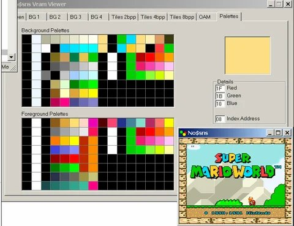
Lo sviluppatore doveva lavorare con più spazi di indirizzamento contemporaneamente, scrivendo i dati della CPU RAM in un intervallo di indirizzi e i dati del chip video in un altro. La VRAM era accessibile al processore in qualsiasi momento, ma si poteva scriverci solo durante il periodo di blank; altrimenti la PPU e la CPU accedevano allo stesso bus contemporaneamente e i dati si corrompevano.
Il problema dell'accesso condiviso al bus era fondamentale per tutte le console di quel periodo. Sul NES e sullo SNES veniva risolto dando semplicemente alla PPU la priorità sul bus durante il disegno attivo, e se la CPU cercava di scrivere dati nella VRAM in quel momento, il risultato era imprevedibile. Alcuni byte potevano finire in indirizzi sbagliati, alcuni andavano persi, e sullo schermo comparivano tile casuali o distorsioni di colore. Non era un bug nella comprensione dei progettisti hardware — è semplicemente più economico condividere il bus a tempo che dare a ciascun chip memoria separata con accesso indipendente, e lo sviluppatore era obbligato a saperlo e a pianificare tutto il lavoro sulla memoria video rigorosamente intorno ai periodi di blank.
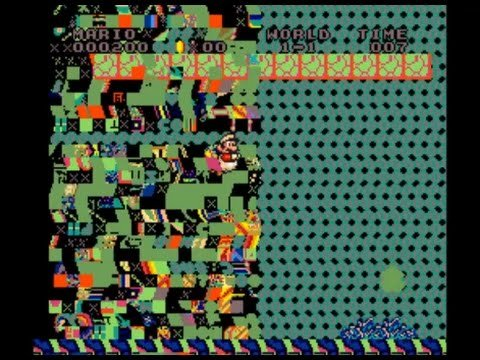
Sul NES lo spazio di indirizzamento della CPU era di 64 KB, ma c'erano solo 2 KB di RAM fisica, con il resto dello spazio riempito da mirror, registri della PPU, registri dell'APU e la cartuccia; inoltre la PPU aveva il suo spazio di indirizzamento separato da 16 KB che la CPU non poteva indirizzare direttamente affatto, solo attraverso otto registri speciali. Scrivere nella VRAM consisteva nel scrivere in sequenza l'indirizzo nel registro PPUADDR e poi i dati in PPUDATA, il che di per sé creava un problema: il registro dell'indirizzo era di due byte ma veniva scritto tramite due operazioni consecutive da un byte, e se tra le due si verificava un'interruzione, lo stato del contatore interno di indirizzo veniva sballato e la scrittura successiva finiva all'indirizzo sbagliato.
Sullo SNES l'architettura fu resa più complessa con tre bus separati: il bus A per la cartuccia e la Work RAM, il bus B per i registri delle periferiche inclusa la PPU, e il bus interno proprio della CPU. C'era anche un controller DMA separato che poteva spostare dati senza il coinvolgimento del processore, il che rendeva possibile avviare un trasferimento di tile nella VRAM via DMA all'inizio del VBlank e, mentre i dati sono in volo, eseguire la logica di gioco — ma anche qui c'era un tranello.
Il DMA bloccava la CPU per la durata del trasferimento, e se la quantità di dati superava il tempo di VBlank disponibile, la PPU iniziava a disegnare prima che il DMA finisse, e la parte inferiore dello schermo riceveva spazzatura invece dei tile corretti.
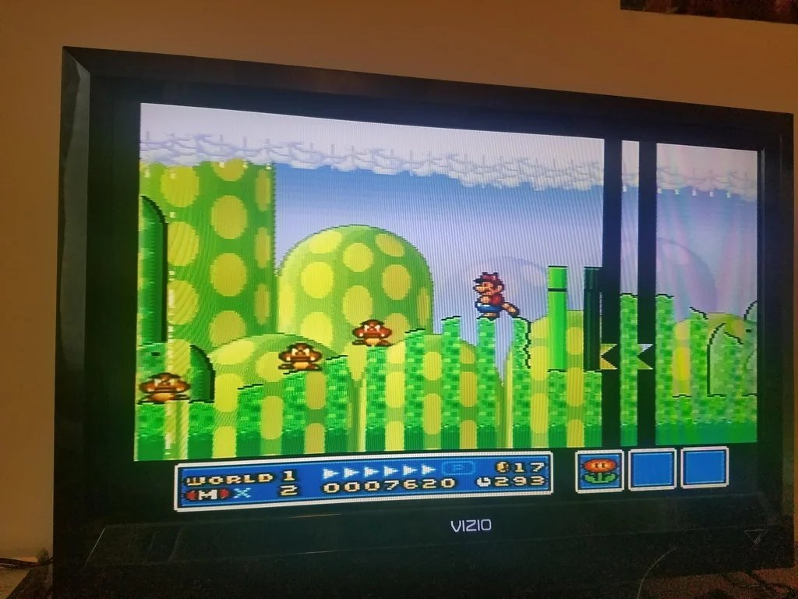
Storicamente furono proprio questi vincoli a dare origine a un intero genere di trucchi tecnici che gli studi usavano, calcolando quanti cicli richiede un'operazione DMA, quante linee di blank sono disponibili a una data frequenza TV, e suddividendo un trasferimento di dati su più frame se non entrava in un solo VBlank. Il caricamento dei tile avveniva gradualmente, e tutto sembrava come il livello che scorre senza pause visibili.
PS1, N64 e i primi giochi in 3D (1994–1999)
La metà degli anni '90 passò all'insegna del 3D, ponendo agli architetti delle console il compito corrispondente di renderizzare geometria tridimensionale, ma, come al solito, ogni console lo risolse in modo diverso.
La PS1 faceva la rasterizzazione attraverso una pipeline fissa con affine texture mapping, dove le texture venivano stese sui poligoni senza correzione prospettica. Era una semplificazione deliberata a favore della velocità.
Il risultato è visibile in qualsiasi screenshot di un gioco PS1: le texture "nuotano" e si deformano al muoversi della camera, specialmente sui poligoni grandi, perché l'affine mapping non tiene conto del fatto che il bordo lontano di un poligono è fisicamente più distante dalla camera di quello vicino. La PS1 non aveva nemmeno un depth buffer (z-buffer), e l'ordine di disegno dei poligoni veniva determinato ordinandoli in base al centro, il che produceva i classici artefatti in cui i poligoni si "infilzavano" a vicenda o venivano disegnati nell'ordine sbagliato.
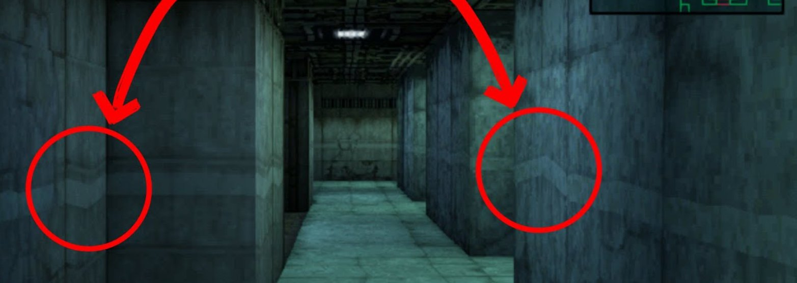
Una spiegazione
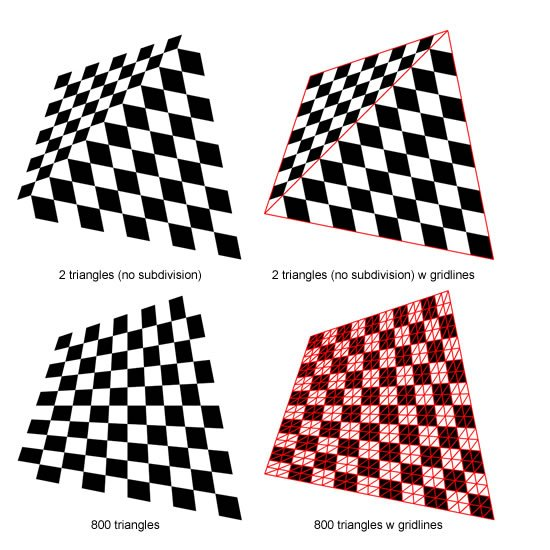
Ma in cambio la PS1 aveva una rasterizzazione veloce e prevedibile, e gli sviluppatori impararono in fretta a nascondere gli artefatti dell'affine mapping suddividendo i poligoni in altri più piccoli.
Il N64 prese una strada diversa e ci mise un Reality Co-Processor con vera correzione prospettica delle texture, uno z-buffer e filtraggio trilineare, cioè tecnicamente il N64 disegnava la geometria in modo più corretto, le texture non nuotavano e i poligoni non si tagliavano a vicenda. Ma per questo bisognava pagare con una minuscola texture cache da 4 KB dentro l'RCP, e qualsiasi texture che non entrasse interamente in quella cache causava un costoso trasferimento di dati dalla memoria principale su un bus lento.
Quindi bisognava o usare texture minuscole o rinunciarvi del tutto a favore di poligoni flat-shaded, il che dava il riconoscibile aspetto "plastilina" dei giochi N64.
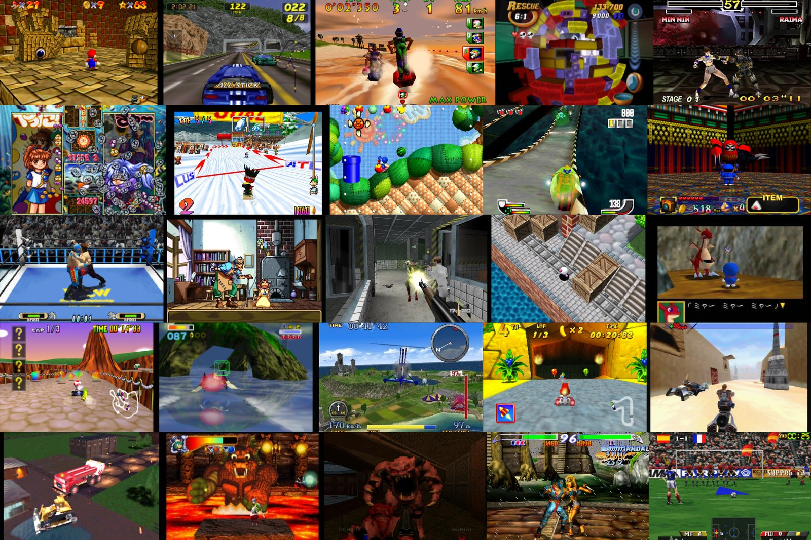
Una differenza fondamentale stava anche in come cartucce contro CD influenzavano l'intero approccio allo sviluppo. La PS1 con il suo CD poteva memorizzare enormi quantità di texture e audio e caricarle secondo necessità, il che compensava i limiti tecnici del rasterizzatore con la possibilità di usare texture molto dettagliate su ogni oggetto, mentre il N64 con una cartuccia aveva accesso ai dati veloce ma un tetto rigido sul volume e una piccola texture cache dell'RCP, che letteralmente non permetteva texture dettagliate né per dimensione della cache né per capacità della cartuccia.
La RDRAM veloce-ma-lenta del N64
La RDRAM offriva una larghezza di banda di picco molto elevata, intorno a 562 MB/s, il che era impressionante per il 1996. Ma aveva un'alta latenza sull'accesso casuale: se il processore leggeva i dati in sequenza lo faceva rapidamente, ma se saltava tra indirizzi casuali — molto lentamente.
La RDRAM comparve sul N64 come risultato del lavoro congiunto tra i produttori giapponesi di console e il genio ingegneristico di Silicon Graphics, che partecipò alla progettazione dell'architettura della console. La DRAM standard girava a 60–70 MHz e dava una larghezza di banda dell'ordine di 100–150 MB/s, il che era catastroficamente insufficiente per la grafica 3D, che aveva bisogno di leggere simultaneamente geometria, texture e lo z-buffer e di scrivere il risultato nel framebuffer.
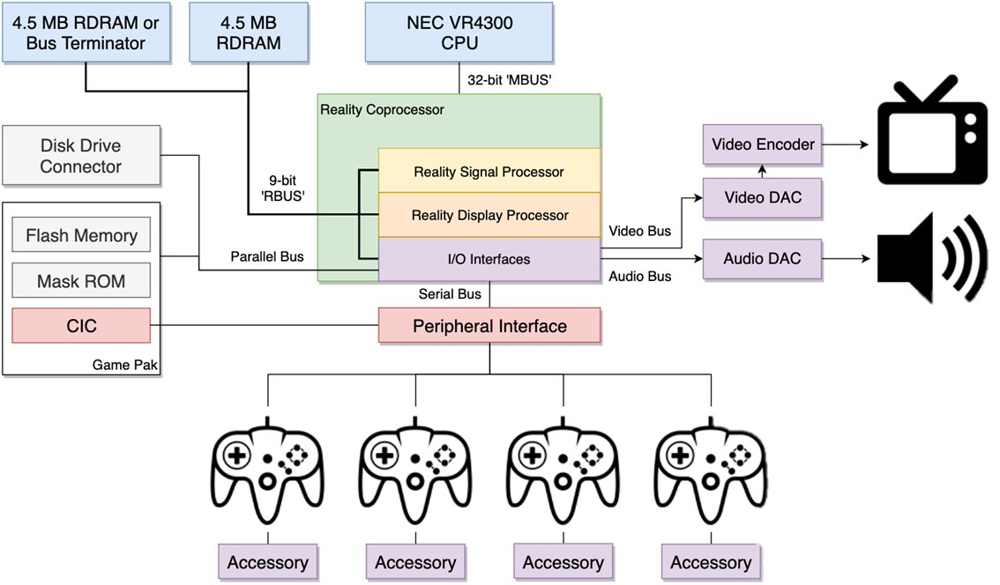
Rambus propose una soluzione: invece di un bus parallelo ampio da 32 o 64 bit, usare un bus seriale stretto da 8–16 bit, ma a frequenza molto alta e con pipelining delle richieste. La larghezza di banda di picco veniva impressionante quando i dati scorrono come un flusso senza pause.
Silicon Graphics scelse la RDRAM per la console perché aveva molta esperienza con questo tipo di memoria e costruiva le sue workstation grafiche proprio attorno all'elaborazione streaming dei dati, dove la pipeline grafica legge in sequenza i vertici, li trasforma, rasterizza e scrive i pixel, e in questo modello la RDRAM funzionava davvero bene.
Il problema era che i carichi di lavoro reali dei giochi non sono mai puramente streaming: il processore passa il 60% del tempo a leggere codice da un posto, il 20% a leggere dati da un altro, e un altro 20% a scrivere in un terzo, e la maggior parte di questi accessi è casuale. Ma con la RDRAM ogni accesso casuale di questo tipo richiedeva l'inizializzazione di una nuova richiesta burst, e la latenza di quell'inizializzazione si accumulava come pesanti pietre di attesa nel carro delle prestazioni.
Gli sviluppatori di giochi N64 scoprirono in fretta che scrivere codice che sfrutti davvero i dichiarati 562 MB/s in condizioni reali è praticamente impossibile, e la larghezza di banda effettiva reale negli scenari di gioco era più vicina a 200–250 MB/s, cioè leggermente meglio della PS1 con la sua DRAM ordinaria, ma non molte volte meglio come suonava nelle presentazioni di marketing. Il divario tra larghezza di banda di picco e reale divenne una delle ragioni per cui il N64 veniva percepito come una piattaforma difficile da padroneggiare, nonostante un hardware tecnicamente superiore.
Per ottenere il throughput dichiarato, bisognava organizzare la geometria in modo da minimizzare l'accesso casuale: usare triangle strip invece di mesh indicizzate, ordinare i vertici per ordine di utilizzo, e pre-elaborare le texture sulla build farm in modo che giacessero in sequenza in memoria.
// Questo funzionava bene con letture sequenziali
for (int i = 0; i < vertex_count; i++) {
process_vertex(vertex_array[i]); // stride 1, la cache è felice
}
// Questo funzionava male con accesso casuale tramite l'index buffer
for (int i = 0; i < index_count; i++) {
process_vertex(vertex_array[index_buffer[i]]); // cache miss su ogni vertice
}Intel finì in un pasticcio simile nel 1999, quando firmò un accordo con Rambus e cercò di rendere la RDRAM lo standard per il Pentium 4, cosa che si concluse con un clamoroso fallimento per le stesse ragioni: prezzo alto, alta latenza sull'accesso casuale, e un divario tra i numeri di marketing e le prestazioni reali nelle applicazioni ordinarie, dopodiché il mercato si assestò definitivamente sulla DDR e la storia della RDRAM come standard di massa finì lì.
Dreamcast: una console dal futuro
Il Dreamcast si rivelò una delle console più insolite del suo tempo proprio perché la sua architettura di memoria e di rendering assomigliava più a un prototipo della generazione successiva (PS2/Xbox) che a un concorrente diretto delle PlayStation e Nintendo di fine anni '90.
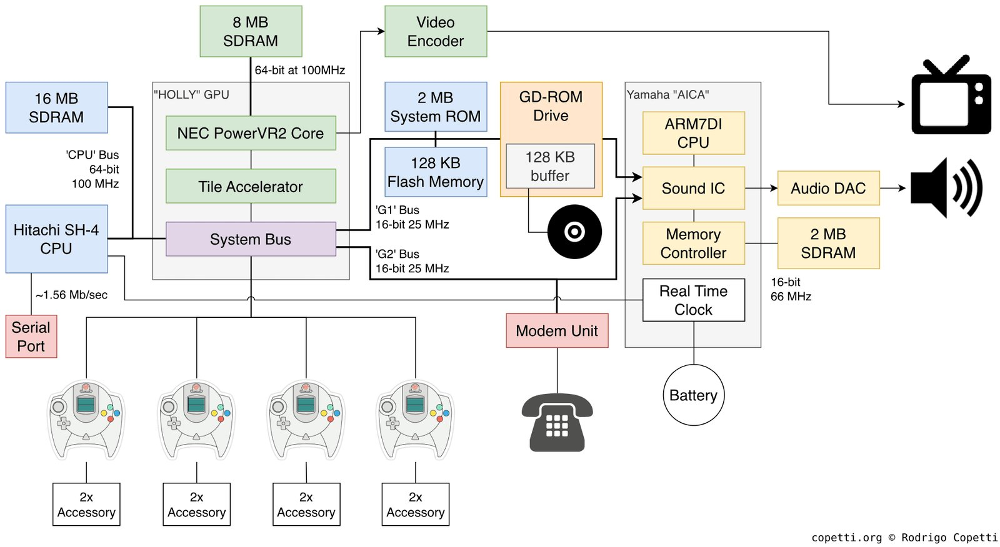
Rilasciata nel 1998, la console usava un processore Hitachi SH-4 a 200 MHz e un chip grafico PowerVR2 basato su un tile renderer, che quasi nessuno sviluppatore di giochi mainstream considerava una soluzione praticabile.
La maggior parte delle GPU di quell'epoca lavorava secondo lo schema "emetti un comando — disegnalo", in cui ogni poligono veniva rasterizzato quasi immediatamente dopo l'elaborazione, il che significava accessi costanti alla memoria esterna.
Se diversi poligoni si sovrapponevano sullo stesso pixel, il chip video leggeva e sovrascriveva più volte la stessa regione del frame buffer e dello Z-buffer. Il PowerVR2, invece, raccoglieva prima la geometria del frame, poi divideva lo schermo in piccoli tile, e solo dopo renderizzava separatamente ogni tile, scartando in anticipo i poligoni invisibili.
Questo permetteva di ridurre nettamente il numero di scritture nella VRAM esterna e abbassava le richieste sulla larghezza di banda della memoria, il che per la fine degli anni '90, con memoria non delle più veloci, era un'ottima soluzione tecnica.
Così, con una quantità di memoria relativamente modesta, la console dimostrava spesso prestazioni elevate e un'immagine molto pulita, specialmente nelle scene con molta geometria opaca.
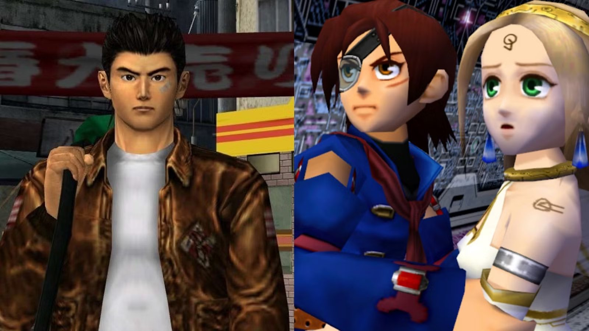
Tuttavia, il tile renderer cambiò non solo il funzionamento interno della GPU ma il modello stesso di pensiero dello sviluppatore, e tecniche considerate standard sulla PlayStation o sul PC dell'epoca non funzionavano o funzionavano in modo errato.
Grandi superfici semi-trasparenti, il rendering multipass e i sistemi di particelle divennero inaspettatamente costosi, perché la trasparenza distruggeva i vantaggi di questo approccio: la GPU non poteva scartare in anticipo i pixel nascosti, il che portava a passaggi aggiuntivi e a un uso più intensivo della memoria.
Come risultato si scoprì che il problema delle prestazioni è sempre più determinato non dal numero di operazioni aritmetiche ma dalla quantità di dati che devono essere spostati tra la GPU e la memoria.
Vent'anni dopo praticamente tutte le GPU mobili, incluse le GPU Apple, Mali e Adreno, sarebbero arrivate ad architetture a tile molto simili, ma per una ragione diversa: il costo dell'accesso alla memoria, specialmente in termini di consumo energetico, si sarebbe rivelato assai più importante del costo del calcolo.
PS2, Xbox, GameCube (2000–2005)
La PS2, l'Xbox e il GameCube uscirono nella stessa generazione, ma avevano architetture di memoria così diverse che un port da una piattaforma all'altra richiedeva spesso di riscrivere da zero il sistema di gestione delle risorse.
La PS2 aveva tre "isole" separate di memoria: 32 megabyte di RDRAM principale per l'EE (Emotion Engine), 4 megabyte di VRAM per il GS (Graphics Synthesizer) e 2 megabyte di IOP RAM per l'I/O, il suono e il lettore CD. Ogni isola era servita dal proprio bus, e il trasferimento tra loro era un'operazione esplicita via DMA.
È un fatto storico che gli sviluppatori con esperienza su N64 atterravano sulla PS2 in un ambiente familiare, anche se più complesso, perché Nintendo costruiva coerentemente le sue console attorno a un'idea simile — che la memoria non è un pool omogeneo ma un insieme di regioni specializzate con caratteristiche diverse — e il N64, con la sua divisione tra cartuccia, RDRAM principale e la texture cache dell'RCP, li aveva già addestrati a pensare esattamente in questi termini.
Sulla PS2 la stessa logica diventava semplicemente più esplicita, e tre isole di memoria con velocità diverse, bus diversi e trasferimenti DMA espliciti tra loro erano concettualmente più vicine e chiare a quella scuola giapponese di sviluppo dei giochi.
Questo dava un vantaggio ai veterani del N64, per i quali era naturale costruire il sistema di gestione delle risorse attorno a budget espliciti per ogni isola e pianificare in anticipo i trasferimenti DMA, mentre un programmatore proveniente dal PC cercava istintivamente di astrarre dalla struttura fisica della memoria e otteneva stall dove non si aspettava di vederli.
Flusso di dati approssimativo sulla PS2:
CD/DVD disc
│
▼
IOP (2 MB) ──DMA──► EE Main RAM (32 MB) ──DMA──► GS VRAM (4 MB)
│ │
▼ ▼
EE (CPU Logic) Rendering
VU0 / VU1 (geometry)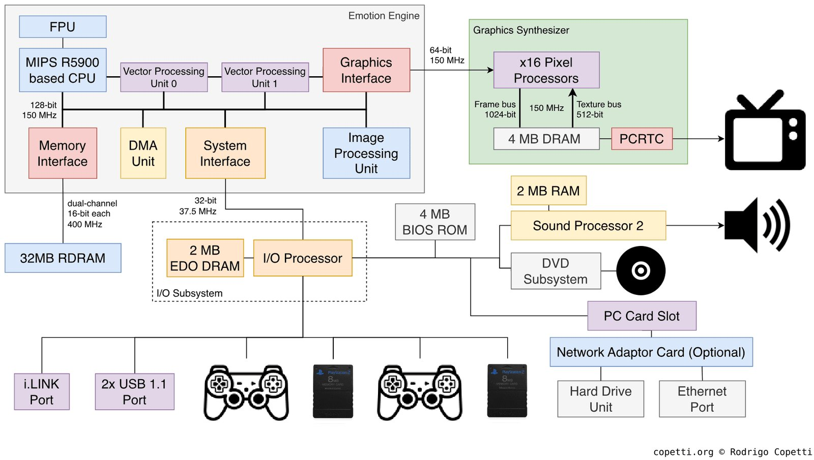
La caratteristica principale della PS2 era una coppia di unità vettoriali, VU0 e VU1, in grado di lavorare in parallelo con il processore principale. VU0 era strettamente accoppiata alla CPU e usata per fisica e collisioni. VU1 era collegata al GS e gestiva la trasformazione della geometria e la preparazione delle primitive.
Ogni VU aveva il suo piccolo store per microprogrammi: VU0 aveva 4 kilobyte, VU1 aveva 16 kilobyte. Questo significava che lo sviluppatore poteva scrivere programmi separati per le VU (un compute shader nel senso moderno) e li caricava lì prima dell'uso. Era una forma di parallelismo hardware disponibile molto prima che diventasse la norma nello sviluppo su PC con GPGPU, quando gli sviluppatori ottennero tra le mani la capacità di eseguire fisicamente logica parallela.
// Schema concettuale dell'uso di VU1
vu1_upload_program(skinning_microprogram, vu1_microprog_memory);
vu1_upload_data(vertex_buffer, vu1_input_buffer);
vu1_execute();
// mentre VU1 trasforma la geometria, la CPU esegue la logica
cpu_update_game_state();
vu1_wait_complete();
vu1_kick_to_gs(); // invia il risultato direttamente al GSL'Xbox usava un'ordinaria architettura in stile Pentium III con 64 megabyte unificati di DDR condivisi tra CPU e GPU. Nessuna "isola" — solo uno spazio di indirizzamento accessibile a tutti da ovunque, e i programmatori provenienti dallo sviluppo su PC si sentivano a casa.
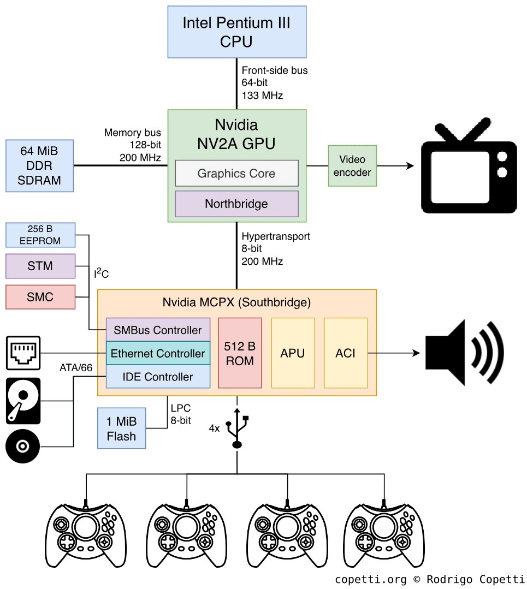
L'Xbox era così vicina a un normale PC che Microsoft non lo nascondeva nemmeno. Dentro la console c'era un Intel Pentium III leggermente modificato a 733 MHz, una scheda grafica basata sulla GeForce 3 di Nvidia, e un ordinario disco rigido IBM — cioè hardware che in sostanza potevi comprare in qualsiasi negozio di computer con modifiche minime.
Questo dava evidenti vantaggi nel portare i giochi dal PC, cosa che ora richiedeva settimane invece di mesi, e l'API DirectX era familiare a qualsiasi sviluppatore Windows, così l'intero ecosistema di sviluppo PC si spostò sulla console quasi invariato. Ma insieme a esso si spostarono anche tutti i problemi dell'architettura PC: memoria unificata, la lotta per il bus tra CPU e GPU, cali nei momenti di picco di carico, cache miss, e così via.
Insieme agli sviluppatori arrivò l'abitudine a non pensare esplicitamente alla gestione della memoria, il che portava i giochi Xbox a usare spesso le risorse in modo meno efficiente dei loro concorrenti su PS2 o GameCube, che spremevano il massimo dalle loro architetture specializzate.
L'ultimo di questo trio, il GameCube, poteva offrire 24 megabyte di veloce SRAM "Splash" proprio sul chip GPU (1T-SRAM a latenza molto bassa) più 16 megabyte di DRAM esterna, anch'essa collegata alla GPU. La larghezza di banda della memoria interna era enorme, dell'ordine di 9,6 GB/s, il che le permetteva di competere con la PS2 in prestazioni nonostante una quantità di memoria minore.
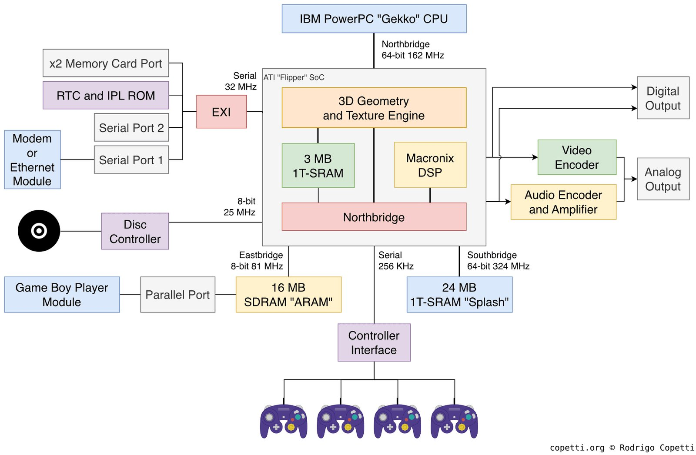
I 24 megabyte di Splash SRAM del GameCube erano più veloci degli equivalenti dei concorrenti, e gli sviluppatori che riuscivano a far entrare un'intera scena attiva in questa memoria ottenevano un rendering notevolmente più veloce che sulla PS2 con i suoi 4 megabyte di VRAM, per non parlare dell'Xbox. Ma 24 megabyte per tutto — geometria, texture, buffer di lavoro — sono pochissimi, e gestire questo spazio richiedeva una disciplina di sviluppo particolare, il che portava ad approcci complessi al lavoro con un frame: tenere nella memoria veloce solo le texture attive della scena corrente, e usare i restanti 16 megabyte di memoria esterna come un grande buffer intermedio per il caricamento dal disco.
PS3, Xbox 360 e la memoria divisa
La PS3 (2006) e l'Xbox 360 (2005) uscirono praticamente simultaneamente per gli standard di una nuova generazione di console, ma avevano modelli di memoria fondamentalmente diversi, il che rendeva lo sviluppo cross-platform di quell'epoca molto doloroso.
L'Xbox 360 aveva 512 megabyte di memoria GDDR3 unificata con una larghezza di banda dell'ordine di 22,4 GB/s, fisicamente accessibile sia alla CPU (Xenon) che alla GPU (Xenos) senza condizioni o copie aggiuntive.
L'Xbox aveva inoltre 10 megabyte di EDRAM sul chip GPU, che girava a una larghezza di banda di circa 256 GB/s, un ordine di grandezza più veloce della memoria principale, e l'intera pipeline del frame, incluso il frame buffer e lo Z-buffer, avveniva in questa EDRAM.
Alla fine del frame il risultato veniva copiato nella memoria principale per la visualizzazione. Grazie all'alta larghezza di banda dell'EDRAM, la console poteva fare 4x MSAA praticamente gratis, perché scrivere in un buffer 4 volte più grande non costava nulla in termini di larghezza di banda. Sulla PS3, dove il frame buffer era memorizzato in GDDR3, lo stesso MSAA costava notevolmente di più. Ma il limite di 10 megabyte — un frame buffer 1280×720 @ 32bpp + uno Z-buffer a 32 bit = 7,03 MB, e se lo sviluppatore voleva renderizzare a una risoluzione non standard o aggiungeva un altro passaggio o target pesante, il budget si esauriva e bisognava andare alla lenta memoria principale.
La PS3 aveva 256 megabyte di XDR DRAM per il processore Cell e separatamente 256 megabyte di GDDR3 per la GPU (RSX). Lo stesso totale dell'Xbox 360, ma era fisicamente divisa, e il processore poteva leggere la memoria video solo attraverso un bridge PCIe, mentre l'RSX poteva leggere la memoria di sistema quando la CPU non la stava usando — il che era, ovviamente, lento.
Cell BE (3.2 GHz) RSX (GPU)
│ │
├─ PPU (main core) ├─ 256 MB GDDR3 VRAM
│ └─ SPU 0...5 │ (bandwidth: ~22.4 GB/s)
│ (local stores │
│ 256 KB each) │
│ │
└─ 256 MB XDR DRAM │
(bandwidth: │
~25.6 GB/s for Cell) │
│
───────── PCIe x16 ─────────────────
(bandwidth: ~15 GB/s each direction)Inoltre, il processore della PS3 conteneva sei SPU (Synergistic Processing Units) funzionanti, ciascuna con 256 kilobyte di local storage (Local Store). Una SPU non poteva accedere direttamente alla memoria principale e lavorava solo con i dati nel suo Local Store, richiedendo trasferimenti DMA da e verso di esso con comandi espliciti.
// Come funziona una SPU
// Nel Local Store (256 KB):
// [0..63 KB] input buffer — dati da elaborare
// [64..127 KB] output buffer — risultati
// [128..192 KB] next input buffer (DMA in corso)
// [192..256 KB] codice SPU + stack
// Ciclo principale di un task SPU:
while (has_work) {
// Mentre elaboriamo il buffer corrente...
process_data(input_buffer_a, output_buffer_a);
// ...carica il successivo in parallelo
dma_get_async(next_input, main_memory_ptr, INPUT_SIZE);
dma_put_async(output_buffer_a, result_memory_ptr, OUTPUT_SIZE);
dma_wait_all(); // sincronizza prima dell'iterazione successiva
swap_buffers();
}Questo pattern di double-buffering per i trasferimenti DMA permetteva al calcolo e al trasferimento dei dati di sovrapporsi. Un task SPU scritto bene non restava mai inattivo in attesa del DMA, mentre uno scritto male prima aspettava il DMA e spesso disturbava il processore principale con interruzioni, poi calcolava, poi aspettava di nuovo, funzionando non solo più lentamente ma anche intralciando la logica principale. La difficoltà di scrivere programmi SPU allontanò la maggior parte degli sviluppatori da questo schema, e molti non aprirono mai nemmeno la documentazione delle SPU, considerandola esotica. Solo un terzo dei giochi PS3 usava le SPU, e appena pochi giochi realizzarono pienamente queste capacità.
PS4, Xbox One e l'unificazione condivisa
La PS4 e l'Xbox One (2013) fecero ciò che gli sviluppatori chiedevano fin dall'epoca della PS1, ed entrambe le console ottennero un unico spazio di indirizzamento con memoria condivisa per la CPU e la GPU. Questo passo, che sembrava ovvio alla maggior parte degli sviluppatori, divenne possibile grazie a diversi fattori: l'Xbox aveva conquistato metà del mercato delle console e poteva dettare le condizioni a Nintendo e Sony sul loro terreno storico; l'architettura x86-64 era diventata mainstream ed economica; e infine, gli ultimi seguaci di una via proprietaria nell'architettura avevano lasciato Sony, e non c'era più nessuno a fermare l'avanzata delle idee di Intel nel faro della cantieristica giapponese di console.
Così la PS4 ottenne 8 gigabyte di GDDR5 con un unico bus per la CPU (Jaguar, 8 core x86-64) e la GPU, con una larghezza di banda fino a 176 GB/s al picco su dati streaming, mentre l'Xbox One ottenne gli stessi 8 gigabyte ma divisi: 5 gigabyte di DDR3 per le applicazioni e 3 gigabyte di DDR3 per il sistema, più 32 megabyte di ESRAM incorporata (di nuovo, come l'EDRAM della 360, ma più grande). Lo schema si rivelò più complesso di quello della PS4, e ora erano gli sviluppatori Microsoft a lamentarsi della necessità di gestire esplicitamente cosa va nell'ESRAM.
Il processore Jaguar era stato originariamente creato per laptop e tablet a basso TDP, non per console da gioco, e aveva cache relativamente piccole, il che significava che il codice per la PS4 aveva bisogno di un'attenta organizzazione dei dati cache-friendly, dettando strutture dati particolari, AoS vs SoA, footprint minimi per le strutture dell'hot-path, e prefetch esplicito dei dati caldi. I motori provenienti dallo sviluppo su PC, dove gli sviluppatori erano abituati a fare affidamento su cache più grandi, davano risultati prevedibilmente scarsi sul Jaguar fino alle ottimizzazioni appropriate.
// AoS (Array of Structures) — cattivo per Jaguar
struct Entity {
float x, y, z; // posizione
float vx, vy, vz; // velocità
int health;
int type;
char name[32]; // 32 byte di nome vengono tirati in cache quando si accede alla posizione
};
Entity entities[1000];
// Aggiornare le posizioni tira l'intera struct in cache,
// anche se servono solo x/y/z e vx/vy/vz
// SoA (Structure of Arrays) — buono per Jaguar
struct EntityPositions { float x[1000], y[1000], z[1000]; };
struct EntityVelocities { float vx[1000], vy[1000], vz[1000]; };
struct EntityMisc { int health[1000], type[1000]; };
// Aggiornare le posizioni legge solo un array denso di float,
// una cache line contiene 16 posizioni invece di 1 structIl cambiamento più importante di questa generazione fu che scomparve la necessità di copiare esplicitamente i dati tra memoria "di sistema" e "video". Sulla PS3 una texture esisteva prima in XDR DRAM, poi veniva copiata in GDDR3 perché la GPU la usasse, mentre sulla PS4 una texture viene creata una volta, e la GPU la legge dallo stesso indirizzo dove la CPU l'ha messa.
CPU (Jaguar, x86-64) GPU
│ │
└─────── shared bus ──────────┘
│
8 GB GDDR5 @ 176 GB/s
// Nessuna divisione esplicita: sia CPU che GPU vedono un unico intervallo di indirizzi.
// La GPU ottiene il buffer tramite un handle, non tramite una copia separata.
CommandBuffer* cb = gpu_alloc_command_buffer();
gpu_set_vertex_buffer(cb, shared_vertex_buffer_handle);
gpu_set_shader(cb, vertex_shader);
gpu_draw(cb, index_count);
gpu_submit(cb);
// la CPU non aspetta e continua con la logica del frame successivoQuesto semplifica sia la gestione delle risorse sia lo streaming, ma crea un altro problema. Comparve la contesa per il bus di memoria, perché la CPU e la GPU condividono fisicamente gli stessi fili, e se la GPU nel mezzo del rendering sta spingendo molti dati mentre la CPU nello stesso momento vuole caricare una texture dal disco in memoria, iniziano a intralciarsi a vicenda, ed entrambe fanno il loro lavoro peggio e più lentamente che se fosse fatto come operazioni sequenziali.
PS5, Xbox Series e l'SSD come nuovo livello di memoria
Il dolore principale della generazione precedente non era più una carenza di VRAM — la maggior parte dei giochi non usava nemmeno metà della RAM/VRAM disponibile — ma la velocità di caricamento in streaming. La PS4 e l'Xbox One avevano ordinari HDD con una larghezza di banda dell'ordine di 100 MB/s, il che, con 8 gigabyte di RAM e grandi mondi aperti, significava streaming costante, dove alcune risorse venivano caricate mentre altre venivano sfrattate.
Bisognava spendere sforzi in sistemi separati e complessi per dare priorità ai caricamenti e mascherare la latenza per i mondi aperti. Questa tendenza nello sviluppo dei giochi non passò inosservata, e la PS5 già vi rispose con un SSD NVMe custom con grandi cache, larghezza di banda fino a 9 GB/s (con decompressione hardware), e un chip specializzato per la decompressione hardware Kraken proprio sul percorso dall'SSD alla RAM.
Cioè, potevi in sostanza cuocere l'intero livello con tutte le sue texture, modelli, NPC e altra roba in un archivio, consegnarlo alla console e dire "mettilo in RAM a partire dal tale indirizzo", e mezzo secondo dopo avere un livello completamente caricato — il che ci riporta (in termini di reattività) all'era dello SNES, quando un livello iniziava subito dopo aver premuto il pulsante start, senza schermate di caricamento o transizioni tra le aree.
L'Xbox Series X offriva la Xbox Velocity Architecture con un SSD NVMe da 2,4 GB/s, uno schema di decompressione hardware simile, e DMA diretto in memoria.
Traditional PS4 (simplified):
HDD (100 MB/s)
│ load
▼
RAM 8GB GDDR5
│ GPU reads textures from RAM
▼
GPU rendering
PS5 (simplified):
NVMe SSD (5.5 GB/s)
│ Kraken hardware decompression
│ direct DMA
▼
RAM 16GB GDDR6 (448 GB/s)
│ GPU reads textures from RAM
▼
GPU rendering
SSD speed grew ~55x.Il cambiamento fondamentale di questa generazione è che l'SSD arrivò a essere considerato non un "disco lento con cui devi lavorare compito per compito" ma un altro livello di memoria nella gerarchia. Dove la generazione precedente ti costringeva a costruire complessi sistemi di streaming con predizione e buffer, la PS5 permetteva un passaggio a un modello diretto: carica ciò che serve quando serve, e rimuovi semplicemente dal livello ciò che non serve invece di tenerlo in cache per il futuro.
Qui si sviluppa una situazione interessante: l'enfasi degli sviluppatori sui grandi mondi aperti ha plasmato lo sviluppo dell'hardware. Prima della PS5, questi mondi richiedevano schermate di caricamento visibili nelle transizioni, o piccole celle di mondo, o astuti corridoi-di-caricamento (gli "ascensori" in Halo, i passaggi stretti in The Last of Us), che erano soluzioni ingegneristiche per mascherare il fatto che l'HDD non ce la faceva. E ora, con un SSD veloce e la decompressione hardware, la necessità della maggior parte di questi trucchi è scomparsa.
Ratchet & Clank: Rift Apart sulla PS5 ha dimostrato il teletrasporto tra mondi senza alcun caricamento proprio perché l'SSD caricava la nuova scena in frazioni di secondo, giusto mentre veniva riprodotta l'animazione della transizione.
Come al solito, nemmeno questo è andato senza stampelle. Se porti sulla PS5 un motore scritto per la PS4, con i suoi sistemi di streaming uno a uno, e non usi affatto le capacità dell'SSD, allora non dà alcun guadagno tangibile. Otterrai semplicemente il tuo 15–20% dall'aumentata potenza dell'hardware. E molti dei primi giochi PS5 sono semplicemente progetti cross-gen vincolati dal modello di memoria della generazione precedente: si limitavano a caricare più velocemente ma non cambiavano l'architettura dei loro mondi.
La generazione Game Boy, e di nuovo il conteggio dei byte
Torniamo un po' indietro, perché oltre alle grandi console abbiamo anche piattaforme mobili e semi-mobili. Anche queste sono popolari presso un numero molto grande di giocatori, e la situazione con loro, se non radicalmente diversa, è comunque molto interessante.
Il Game Boy (1989) aveva 8 kilobyte di RAM di lavoro e 8 kilobyte di VRAM. Era più dell'Atari 2600 ma meno del NES. Il Game Boy Advance (2001) portò un ARM7TDMI a 16,78 MHz, 256 kilobyte di WRAM interna, 32 kilobyte di IWRAM (veloce, accessibile in 1 ciclo) e 96 kilobyte di VRAM.
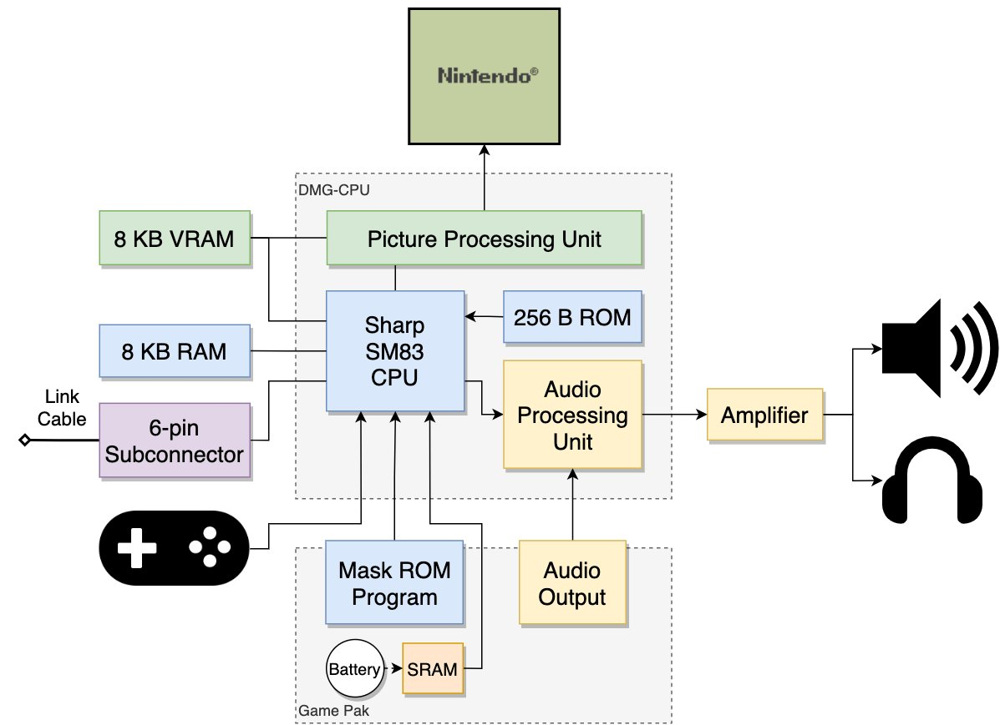
La divisione in WRAM e IWRAM ti permette di mettere il codice critico nella IWRAM per l'accesso in un singolo ciclo, e tutto il resto nella WRAM più lenta. Anche la ROM della cartuccia era accessibile, ma con una latenza di 3–8 cicli a seconda della modalità di accesso, e molti sviluppatori copiavano le funzioni critiche dalla ROM nella IWRAM all'avvio.
// GBA: la differenza tra eseguire dalla ROM e dalla IWRAM
// Se una funzione gira dalla ROM (la cartuccia):
// ogni istruzione Thumb: 3 cicli (3 + wait states)
// ogni istruzione ARM: 4 cicli (1 + 3 per accesso ROM a 32 bit)
// Se una funzione è copiata nella IWRAM e gira da lì:
// ogni istruzione Thumb: 1 ciclo
// ogni istruzione ARM: 1 ciclo
// Attributo per copiare una funzione nella IWRAM:
IWRAM_CODE void critical_update_function(void) {
// questa funzione è copiata nella IWRAM all'avvio
}Il Nintendo DS (2004) divenne la prima console di massa con due schermi, ma per questo articolo la sua architettura di memoria è più interessante: un ARM9 a 67 MHz e un ARM7 a 33 MHz, funzionanti in parallelo con compiti separati.
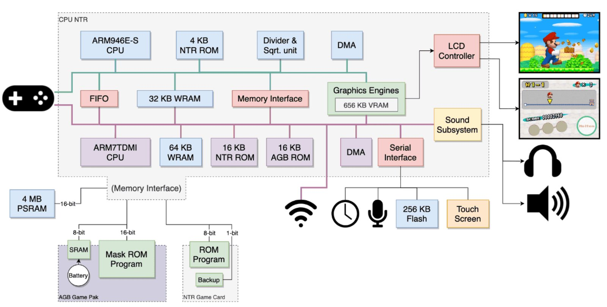
L'ARM9 gestiva la logica di gioco e il rendering dello schermo superiore, l'ARM7 serviva il Wi-Fi, il suono e il touchscreen. Lo sviluppatore doveva distribuire esplicitamente i compiti tra i due processori e gestire in quale RAM risiedeva il codice di ciascuno. Fu il primo sviluppo "multiprocessore" per un pubblico ampio di sviluppatori mobili, qualche anno prima del Cell sulla PS3.
Lo Switch (2017) usa un chip Nvidia Tegra X1 con 4 gigabyte di LPDDR4 condivisi tra CPU e GPU. Lo stesso principio di spazio di indirizzamento unico della PS4, solo in un fattore di forma portatile, e passare tra le modalità (portatile / TV) cambia le frequenze della GPU ma non il modello di memoria.
Le GPU moderne e la memoria "virtuale" della scheda grafica
Con l'attuale generazione di console, è cambiata non solo la velocità della memoria ma l'idea stessa di come una GPU dovrebbe lavorare con le risorse. Sui primi sistemi lo sviluppatore pensava quasi sempre alla memoria in metriche fisiche, perché c'era un framebuffer concreto, texture e atlas concreti, e una quantità concreta di memoria video dentro cui tutte le risorse attive di una scena dovevano entrare in una volta sola.
Le GPU moderne lavorano più vicino al modello di memoria virtuale della CPU, e ora una texture non deve più esistere interamente nella VRAM; il motore può caricare solo quelle parti delle texture che sono effettivamente visibili nel frame corrente.
Questo si chiama virtual texturing, sparse textures e residency management, ed è costruito attorno all'idea che la memoria video non è più il posto dove tutti i dati della scena sono memorizzati permanentemente, ma diventa una cache veloce per le risorse di cui la GPU ha bisogno proprio ora. Questo conta per i moderni giochi open-world, dove l'insieme completo di texture e geometria può occupare centinaia di gigabyte e fisicamente non entrerà in nessuna memoria video.
L'SSD di prossima generazione (su un'ipotetica PS6 renderanno un modello del genere fisicamente realizzabile): mentre su PS3/PS4/PS5 dobbiamo ancora preoccuparci del caricamento dei dati dallo storage, prevedere i caricamenti futuri, o costruire complessi sistemi di streaming attorno a un disco lento (un SSD moderno, per quanto veloce, non è ancora veloce quanto serve), le future PS6 — e in parte già la PS5 e l'Xbox Series — permettono un passaggio allo streaming guidato dalla domanda, in cui i dati vengono caricati nel momento del loro effettivo utilizzo.
Anche la memoria condivisa non è riuscita a risolvere tutti i problemi, sebbene possa sembrare che un unico spazio di indirizzamento elimini completamente le complicazioni dell'interazione CPU–GPU. Ma anche se entrambi i processori lavorano con lo stesso indirizzo di memoria, ciascuno ha comunque le proprie cache, il che significa che i dati non diventano automaticamente visibili all'altro lato immediatamente dopo una scrittura.
Se la CPU ha aggiornato un buffer di particelle ma non ha eseguito le necessarie operazioni di flush o invalidate, la GPU continuerà a leggere la vecchia versione dei dati dalla sua cache, e questo spesso si manifesta come strani artefatti su un singolo frame, frame instabili o sfarfallio visivo.
Questo compito è in parte risolto dalle moderne API di basso livello come Vulkan, DX12 e Metal, che richiedono allo sviluppatore di descrivere esplicitamente la proprietà delle risorse, i punti di sincronizzazione e le barriere, ma concettualmente questo problema non è risolto — abbiamo semplicemente spostato i problemi dell'hardware in su al livello dello sviluppatore.
Sony vede la soluzione a questo problema in ancora un altro strato di DMA, solo che ora su un bus separato tra CPU e GPU, mentre Microsoft e Apple la vedono nell'unificazione dell'APU in modo che possa gestire entrambi gli insiemi di compiti. Ma il compito fondamentale è rimasto lo stesso: i dati devono finire nel posto giusto, al momento giusto, e nella forma giusta, altrimenti puoi dimenticarti delle prestazioni.
P.S. Come ha giustamente notato @XenRE, senza un mapper (NROM) lo spazio di indirizzamento della CPU è rigidamente limitato all'intervallo 0x8000–0xFFFF, che dà un massimo di 32 KB per la PRG e 8 KB per la CHR tramite l'intervallo PPU 0x0000–0x1FFF. La cifra di 512 KB si riferisce al mapper MMC3 come uno dei più diffusi nella libreria commerciale del NES (Super Mario Bros. 3, Mega Man 3–6, Contra, e centinaia di altri). L'MMC3 commuta i banchi PRG e CHR al volo, aggirando i limiti fisici del bus. Non c'è alcun limite teorico per la ROM PRG/CHR con un mapper, e tutto si riduce solo allo schema specifico del mapper.
← Tutti gli articoli